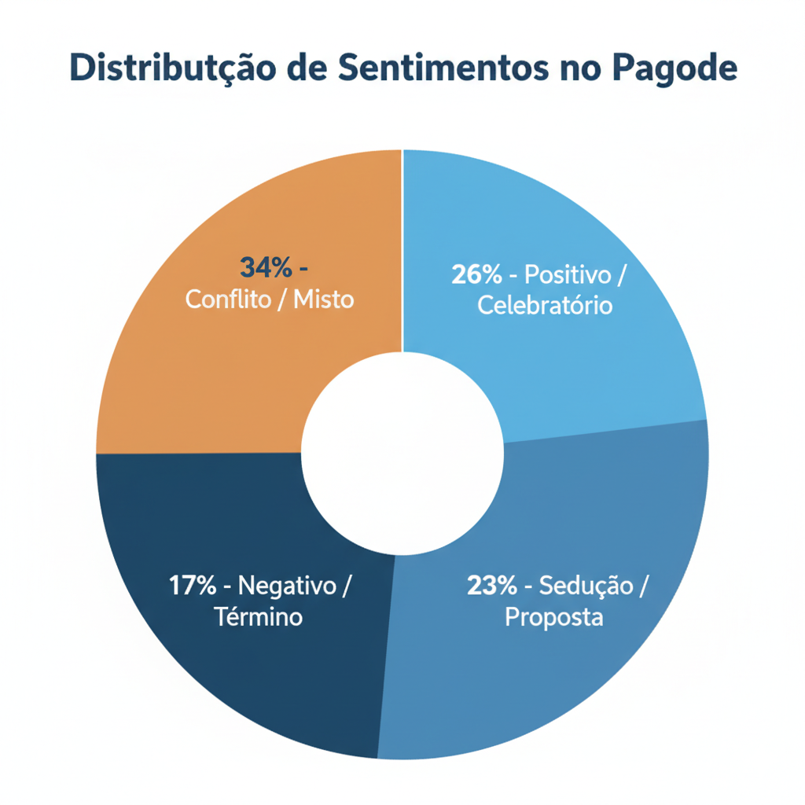
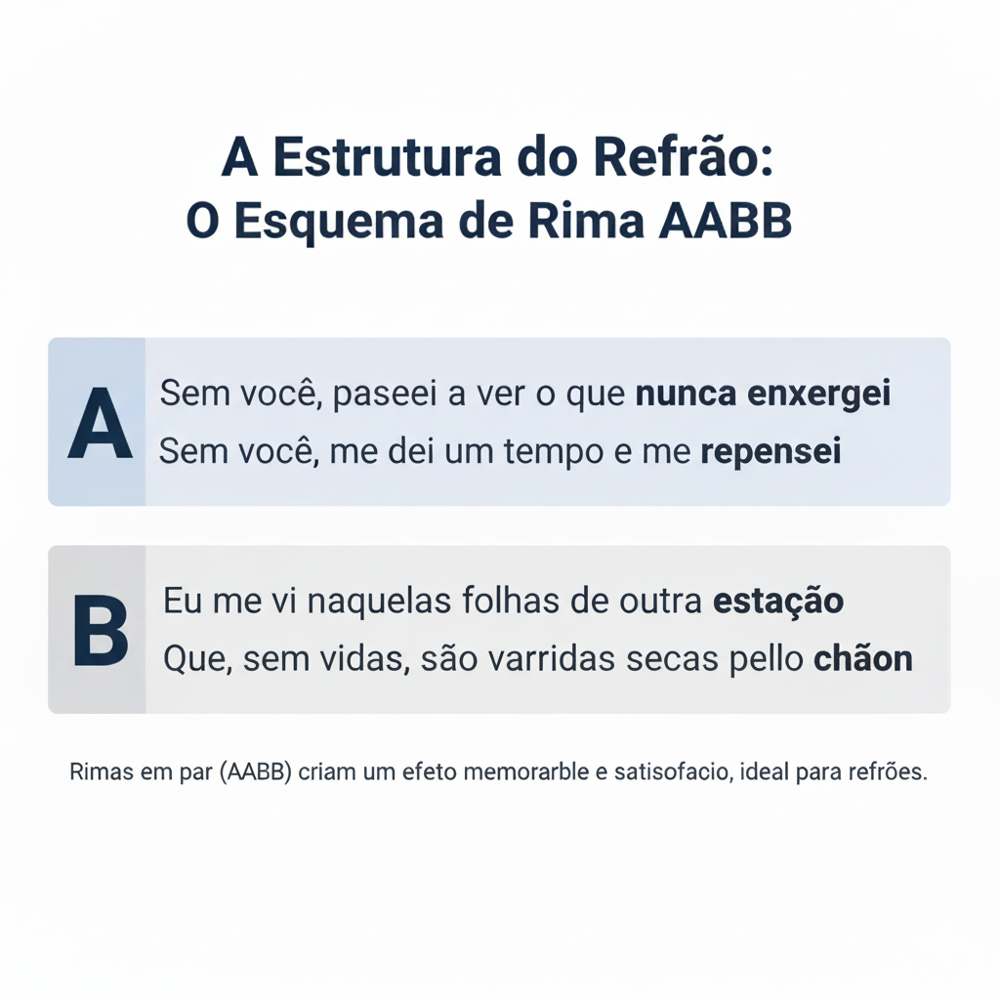

Introdução
Este relatório apresenta uma análise meticulosa de um corpus de 35 canções de pagode, com o objetivo de decodificar os elementos líricos que definem o gênero. Mais do que simples entretenimento, as letras de pagode seguem uma fórmula sofisticada, combinando vocabulário específico, estruturas narrativas consistentes e dispositivos poéticos para criar um impacto emocional máximo. A seguir, detalharemos cada componente dessa "fórmula".
Capítulo 1: O Léxico do Pagode
O vocabulário do pagode é a base de sua identidade. Ele é direto, pessoal e focado em um conjunto específico de conceitos emocionais.
Frequência de Palavras: O DNA da Letra
A análise quantitativa revela um foco intenso na dinâmica entre o "eu" e o "você". A proeminência da negação ("não") indica que o conflito é um pilar central do gênero, tanto quanto o amor.
| Ranking | Palavra | Significado Central |
|---|---|---|
| 1 | eu | A perspectiva pessoal, a experiência do narrador. |
| 2 | você | O outro, o foco do amor ou do conflito. |
| 3 | não | Negação, conflito, perda, recusa. |
| 4 | amor | O tema universal, o objetivo ou a fonte da dor. |
| 5 | coração | O centro da emoção, o "personagem" que sente. |
| 6 | quero | Desejo, vontade, a força motriz da narrativa. |
Campos Semânticos: Os Pilares Temáticos
As palavras mais comuns se agrupam em campos temáticos que formam o universo lírico do pagode:
- Núcleo Relacional: Palavras que formam a dinâmica Eu/Você (eu, você, a gente, mim, te).
- Afeto e Intimidade: O vocabulário do amor (amor, coração, paixão, beijo, carinho).
- Desejo e Saudade: Expressões de vontade e ausência (quero, desejo, saudade, solidão).
- Conflito e Negação: A linguagem dos problemas e do fim (não, nunca, adeus, culpa, chorar, sofrer).
Capítulo 2: O Coração Emocional
Além das palavras, são as histórias e os sentimentos que conectam o público. Identificamos cinco macrotemas e arquétipos narrativos que se repetem consistentemente.
Macrotemas Principais
As narrativas do pagode exploram o ciclo dos relacionamentos modernos:
- Declaração e Devoção: Canções que celebram o amor e a lealdade inabalável.
"Se no Barcelona eu for camisa 10... Mesmo assim, se isso acontecer / Fico com você." - Camisa 10
- Término e Superação: A dor do fim, seja com tristeza ou com resolução.
"Hoje é você quem está sofrendo, amor / Hoje sou eu quem não te quer." - É Tarde Demais
- Arrependimento e Reconciliação: A perspectiva de quem errou e busca perdão.
"Meu amor, eu tive que perder pra acordar / Eu sei que fui difícil de lidar." - Clichê
- Amor Proibido e Infidelidade: Histórias de casos secretos e paixões perigosas.
"Namora, mas adora um proibido / E eu que sou culpado, e eu que sou bandido." - Lancinho

Capítulo 3: A Arquitetura da Canção
A estrutura de uma música de pagode não é aleatória. Ela segue um blueprint funcional, projetado para contar uma história e entregar o refrão da forma mais impactante possível.
O Blueprint Funcional
A maioria das canções segue um modelo claro, onde cada seção tem uma função narrativa específica.
| Elemento | Função Narrativa |
|---|---|
| Verso | A Situação: Apresenta o contexto, o problema, a história. |
| Pré-Refrão | A Tensão: Constrói a expectativa para a mensagem principal. |
| Refrão | A Tese: Entrega a mensagem central, o gancho emocional e melódico. |
| Ponte (Bridge) | A Virada: Oferece uma nova perspectiva, uma reflexão ou uma súplica final. |
Essa estrutura guia o ouvinte por uma jornada emocional controlada, garantindo que o refrão – o coração da música – seja recebido com o máximo impacto.
Capítulo 4: Ferramentas Poéticas e Rítmicas
Para dar cor e vida à estrutura, os compositores utilizam ferramentas poéticas que transformam o texto em arte.
Figuras de Linguagem: Pintando com Palavras
- Hipérbole (Exagero Emocional): É a ferramenta mais poderosa para transmitir a intensidade de um sentimento.
"Tá vendo aquela Lua que brilha lá no céu? Se você me pedir, eu vou buscar só pra te dar." - Tá Vendo Aquela Lua
- Metáfora (Comparação Conceitual): Traduz emoções complexas em imagens concretas e de fácil compreensão.
"Conhece alguém que jogou fora um diamante? Loucura, né? Mas eu joguei." - Péssimo Negócio
Dispositivos Rítmicos: A Musicalidade da Letra
O ritmo não vem só dos instrumentos. A própria letra é construída para ser percussiva e memorável.
- Esquema de Rimas: O padrão AABB (rimas em par) é dominante nos refrões. Sua previsibilidade cria uma sensação de satisfação e torna o refrão fácil de cantar junto.
- Repetição Estratégica: A repetição de palavras ou frases ("Foge, foge, foge...") cria um efeito rítmico e reforça a mensagem principal.

Conclusão: A Fórmula do Pagode
Longe de ser simplista, a composição de letras de pagode é uma arte refinada que segue uma fórmula clara e eficaz:
- Utiliza um vocabulário direto e pessoal, focado no universo relacional.
- Explora um conjunto consistente de temas e arquétipos, gerando alta identificação.
- Emprega uma estrutura narrativa funcional que maximiza o impacto emocional do refrão.
- Usa dispositivos poéticos como a hipérbole e rimas simples para criar letras memoráveis e artisticamente ricas.
Compreender essa fórmula é o primeiro passo para qualquer compositor que deseje não apenas escrever uma canção, mas criar uma verdadeira conexão com o público.